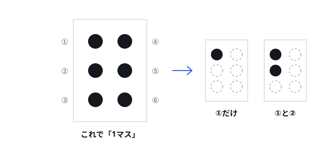

指でさわって読むもじ。でも、まちのどこにあるのか、だれがつくっているのか、知っている？ 体験の日までに、ここを読んでおこう。
この 6つの点のかたまりを「1マス」という。点をどこに出すか、どこを出さないかで、ちがう文字になる。紙のうらからおして、ぷつぷつと出っぱらせてつくる。
6つの点には、上からじゅんに番号がついている。ひだりの列が ①②③、みぎの列が ④⑤⑥。大人の人はこの番号で「①と③の点」のように話す。

いまの 6つの点のかたちは、1825年にフランスのルイ・ブライユがかんがえた。ブライユ自身も目が見えなかった。
それを日本語にあうようにつくりなおしたのが石川倉次。1890年（明治23年）11月1日に、日本の点字として正式にきまった。だから 11月1日は「日本点字制定記念日」とよばれている。
じつは、きみの家にもまちにもある。さがしてみよう。
| ある場所 | なんと書いてある／どんな工夫か |
|---|---|
| おさけのかんのふた | 「おさけ」の点字。1996年からつけられはじめ、2001年から「おさけ」にそろえられた。ジュースとまちがえて飲まないため |
| エレベーターのボタン | 階の数字。「ひらく」「しまる」もついていることがある |
| かいだんの手すり | 「3かい」「上り」など、いまどこにいるか |
| 駅のけんばいき・トイレ | ボタンのよこ、ドアのよこ、かべの案内図 |
| 洗たくきや電子レンジ | スタートボタンに小さな点字や出っぱり |
| お金（さつ） | さわって分かるしるし（「識別マーク」）がついている |
シャンプーのきざみは、さわると分かるしるしです。文字をあらわしているわけではありません。点字とはべつのものです。
点字ブロックは、足や白杖でふんでつかうブロックです。名前に「点字」とついているけれど、読むもじとはべつのもの。
1967年3月18日、岡山県の盲学校のちかくの道に、世界ではじめてしかれた。かんがえたのは三宅精一という人。白杖の人があぶない道をわたるのを見たのがきっかけだった。いまでは世界中にひろがっている。
| 線のブロック | ぼうが何本もならんでいる。「この向きに進んでね」といういみ（誘導） |
|---|---|
| 点のブロック | まるい点がならんでいる。「ここで止まって」「気をつけて」といういみ（警告）。かいだんの上や手前、こうさてんの前にある |
つぎに道を歩くとき、足もとを見てみよう。どこで線が点にかわっている？ かわる場所には、りゆうがある。
本もおしらせも、だれかが1マスずつ点字にうちなおしている。
| 点訳ボランティア | ふつうの本やプリントを点字になおす人たち。パソコンと点字プリンターをつかうことも、手で打つこともある。おぼえるのに何か月もかかる |
|---|---|
| 点字図書館 | 点字の本や音声の本をそろえて、目の不自由な人にかしだす図書館。日本点字図書館などがある |
| 点字の新聞 | 点字だけでつくられた新聞が日本にある。ニュースを自分の指で読める |
| 校正する人 | 点訳したものを、もう一度たしかめる人。点が 1つちがうだけで、べつの文字になってしまうから |
子どものころから目が見えにくい人は、視覚特別支援学校（盲学校）で、こくご・さんすうとおなじように点字を習う。教科書も点字でつくられる。
大人になってから見えにくくなった人は、施設や団体の教室で習う。指先のかんかくをつかうので、大人になってからだとなかなかむずかしい。
目の不自由な人が、みんな点字を読むわけではありません。声で読みあげるきかいをつかう人のほうが多い、という調べもある。
点字も、声も、大きな字も、ぜんぶいります。これは体験の日に聞いてみたいことのひとつだね。
目の不自由な人をささえるくふうは、ほかにもたくさんある。ぜんぶ「情報をどうやってとどけるか」のくふうだ。
| 白杖（はくじょう） | 白いつえ。道のじょうたい、段差、点字ブロックを先に知るための道具。「目のかわりの手」。まちの人に「目が不自由です」と知らせるはたらきもある |
|---|---|
| 盲導犬 | 訓練をうけた犬。角、段差、じゃまなものを教える。ハーネス（もちて）をつけているときは仕事中。さわったり声をかけたりしない |
| 音の出るしんごう | 青になると音やメロディがなるしんごう。南北と東西でちがう音がつかわれている |
| 読みあげのきかい | パソコンやスマホの画面を声で読みあげる。ニュースもメールも音で読める |
| 拡大読書器 | 字を大きくうつして見るきかい。少し見える人にとってとても大事 |
| 同行援護 | 出かけるときにいっしょに行き、道あんない・字の読み書きを手つだうしくみ |
| さわる案内図 | 駅などにある、でこぼこでつくられた地図。指でさわって場所が分かる |
ここまで読んで「まだわからない」ことがあるはず。それがいちばんいい質問になる。れいをあげておくね。そのまま使わなくていい。じぶんのことばで書きなおそう。
ゲストの人は、点字のせんぱいとして来てくれる。だから「かわいそう」と言わない。聞きたいことはまっすぐ聞く。そしてさいごにかならずこれをかんがえる。「まちのなにをかえればいいんだろう？」